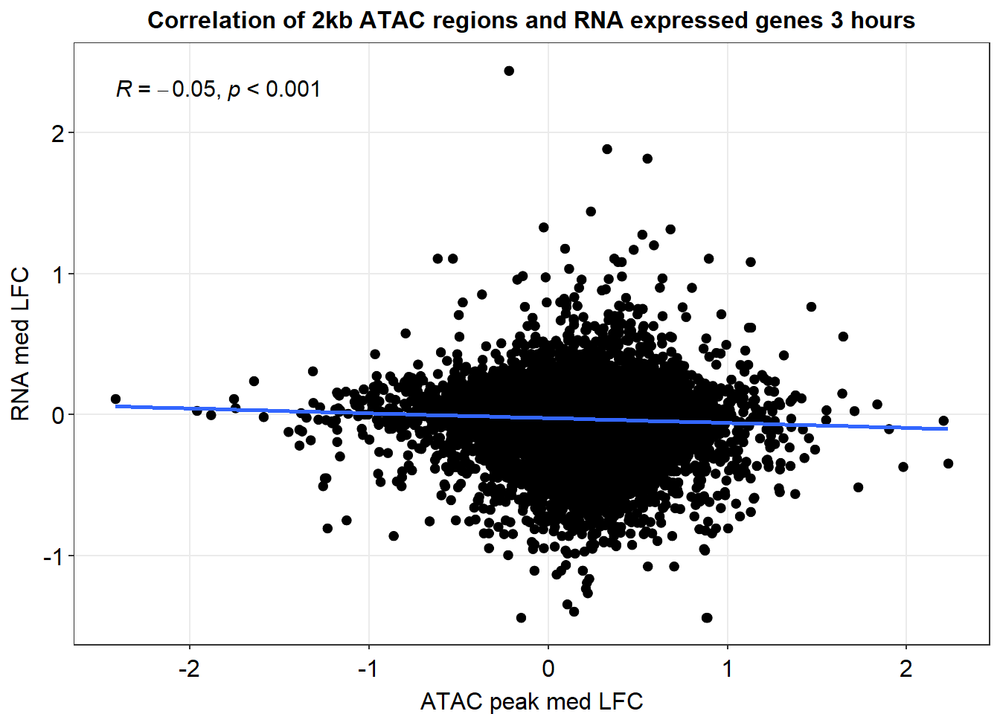
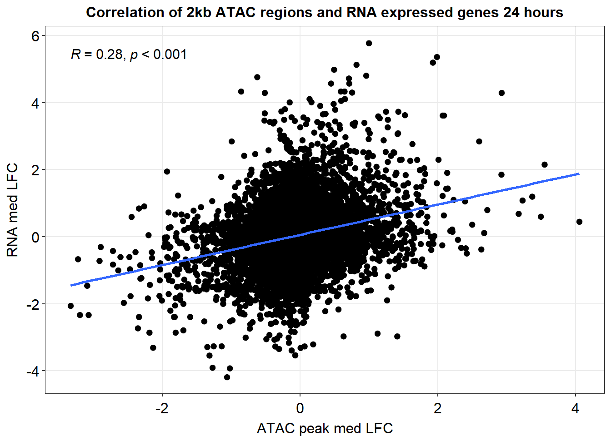
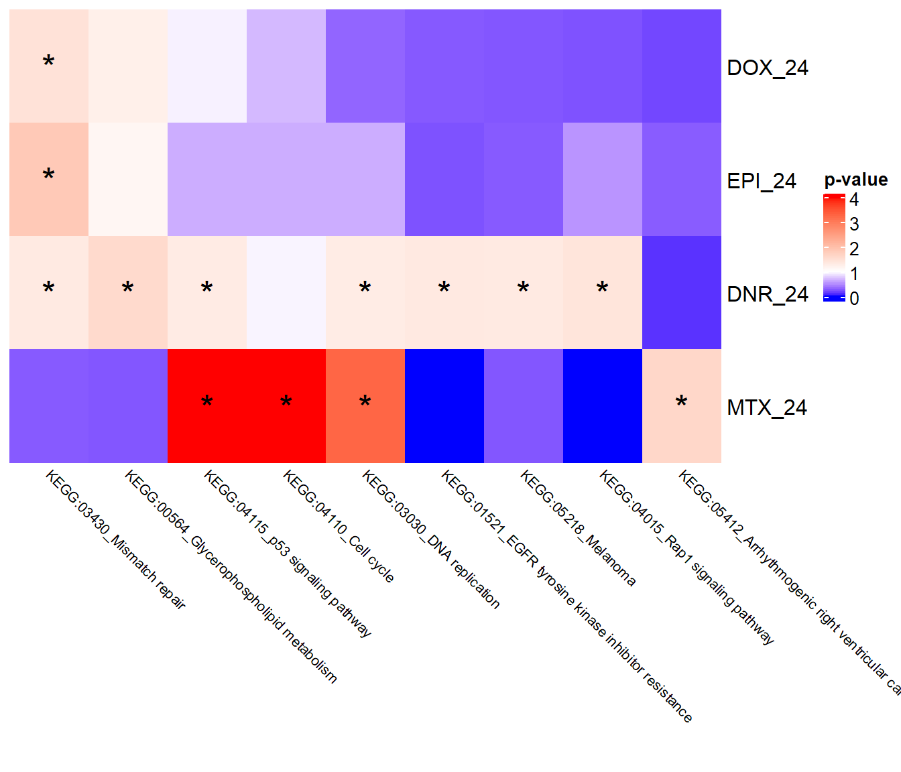

Figure 4
Renee Matthews
2025-02-24
Last updated: 2025-08-18
Checks: 7 0
Knit directory: ATAC_learning/
This reproducible R Markdown analysis was created with workflowr (version 1.7.1). The Checks tab describes the reproducibility checks that were applied when the results were created. The Past versions tab lists the development history.
Great! Since the R Markdown file has been committed to the Git repository, you know the exact version of the code that produced these results.
Great job! The global environment was empty. Objects defined in the global environment can affect the analysis in your R Markdown file in unknown ways. For reproduciblity it’s best to always run the code in an empty environment.
The command set.seed(20231016) was run prior to running
the code in the R Markdown file. Setting a seed ensures that any results
that rely on randomness, e.g. subsampling or permutations, are
reproducible.
Great job! Recording the operating system, R version, and package versions is critical for reproducibility.
Nice! There were no cached chunks for this analysis, so you can be confident that you successfully produced the results during this run.
Great job! Using relative paths to the files within your workflowr project makes it easier to run your code on other machines.
Great! You are using Git for version control. Tracking code development and connecting the code version to the results is critical for reproducibility.
The results in this page were generated with repository version ea72823. See the Past versions tab to see a history of the changes made to the R Markdown and HTML files.
Note that you need to be careful to ensure that all relevant files for
the analysis have been committed to Git prior to generating the results
(you can use wflow_publish or
wflow_git_commit). workflowr only checks the R Markdown
file, but you know if there are other scripts or data files that it
depends on. Below is the status of the Git repository when the results
were generated:
Ignored files:
Ignored: .RData
Ignored: .Rhistory
Ignored: .Rproj.user/
Ignored: analysis/H3K27ac_integration_noM.Rmd
Ignored: data/ACresp_SNP_table.csv
Ignored: data/ARR_SNP_table.csv
Ignored: data/All_merged_peaks.tsv
Ignored: data/CAD_gwas_dataframe.RDS
Ignored: data/CTX_SNP_table.csv
Ignored: data/Collapsed_expressed_NG_peak_table.csv
Ignored: data/DEG_toplist_sep_n45.RDS
Ignored: data/FRiP_first_run.txt
Ignored: data/Final_four_data/
Ignored: data/Frip_1_reads.csv
Ignored: data/Frip_2_reads.csv
Ignored: data/Frip_3_reads.csv
Ignored: data/Frip_4_reads.csv
Ignored: data/Frip_5_reads.csv
Ignored: data/Frip_6_reads.csv
Ignored: data/GO_KEGG_analysis/
Ignored: data/HF_SNP_table.csv
Ignored: data/Ind1_75DA24h_dedup_peaks.csv
Ignored: data/Ind1_TSS_peaks.RDS
Ignored: data/Ind1_firstfragment_files.txt
Ignored: data/Ind1_fragment_files.txt
Ignored: data/Ind1_peaks_list.RDS
Ignored: data/Ind1_summary.txt
Ignored: data/Ind2_TSS_peaks.RDS
Ignored: data/Ind2_fragment_files.txt
Ignored: data/Ind2_peaks_list.RDS
Ignored: data/Ind2_summary.txt
Ignored: data/Ind3_TSS_peaks.RDS
Ignored: data/Ind3_fragment_files.txt
Ignored: data/Ind3_peaks_list.RDS
Ignored: data/Ind3_summary.txt
Ignored: data/Ind4_79B24h_dedup_peaks.csv
Ignored: data/Ind4_TSS_peaks.RDS
Ignored: data/Ind4_V24h_fraglength.txt
Ignored: data/Ind4_fragment_files.txt
Ignored: data/Ind4_fragment_filesN.txt
Ignored: data/Ind4_peaks_list.RDS
Ignored: data/Ind4_summary.txt
Ignored: data/Ind5_TSS_peaks.RDS
Ignored: data/Ind5_fragment_files.txt
Ignored: data/Ind5_fragment_filesN.txt
Ignored: data/Ind5_peaks_list.RDS
Ignored: data/Ind5_summary.txt
Ignored: data/Ind6_TSS_peaks.RDS
Ignored: data/Ind6_fragment_files.txt
Ignored: data/Ind6_peaks_list.RDS
Ignored: data/Ind6_summary.txt
Ignored: data/Knowles_4.RDS
Ignored: data/Knowles_5.RDS
Ignored: data/Knowles_6.RDS
Ignored: data/LiSiLTDNRe_TE_df.RDS
Ignored: data/MI_gwas.RDS
Ignored: data/SNP_GWAS_PEAK_MRC_id
Ignored: data/SNP_GWAS_PEAK_MRC_id.csv
Ignored: data/SNP_gene_cat_list.tsv
Ignored: data/SNP_supp_schneider.RDS
Ignored: data/TE_info/
Ignored: data/TFmapnames.RDS
Ignored: data/all_TSSE_scores.RDS
Ignored: data/all_four_filtered_counts.txt
Ignored: data/aln_run1_results.txt
Ignored: data/anno_ind1_DA24h.RDS
Ignored: data/anno_ind4_V24h.RDS
Ignored: data/annotated_gwas_SNPS.csv
Ignored: data/background_n45_he_peaks.RDS
Ignored: data/cardiac_muscle_FRIP.csv
Ignored: data/cardiomyocyte_FRIP.csv
Ignored: data/col_ng_peak.csv
Ignored: data/cormotif_full_4_run.RDS
Ignored: data/cormotif_full_4_run_he.RDS
Ignored: data/cormotif_full_6_run.RDS
Ignored: data/cormotif_full_6_run_he.RDS
Ignored: data/cormotif_probability_45_list.csv
Ignored: data/cormotif_probability_45_list_he.csv
Ignored: data/cormotif_probability_all_6_list.csv
Ignored: data/cormotif_probability_all_6_list_he.csv
Ignored: data/datasave.RDS
Ignored: data/embryo_heart_FRIP.csv
Ignored: data/enhancer_list_ENCFF126UHK.bed
Ignored: data/enhancerdata/
Ignored: data/filt_Peaks_efit2.RDS
Ignored: data/filt_Peaks_efit2_bl.RDS
Ignored: data/filt_Peaks_efit2_n45.RDS
Ignored: data/first_Peaksummarycounts.csv
Ignored: data/first_run_frag_counts.txt
Ignored: data/full_bedfiles/
Ignored: data/gene_ref.csv
Ignored: data/gwas_1_dataframe.RDS
Ignored: data/gwas_2_dataframe.RDS
Ignored: data/gwas_3_dataframe.RDS
Ignored: data/gwas_4_dataframe.RDS
Ignored: data/gwas_5_dataframe.RDS
Ignored: data/high_conf_peak_counts.csv
Ignored: data/high_conf_peak_counts.txt
Ignored: data/high_conf_peaks_bl_counts.txt
Ignored: data/high_conf_peaks_counts.txt
Ignored: data/hits_files/
Ignored: data/hyper_files/
Ignored: data/hypo_files/
Ignored: data/ind1_DA24hpeaks.RDS
Ignored: data/ind1_TSSE.RDS
Ignored: data/ind2_TSSE.RDS
Ignored: data/ind3_TSSE.RDS
Ignored: data/ind4_TSSE.RDS
Ignored: data/ind4_V24hpeaks.RDS
Ignored: data/ind5_TSSE.RDS
Ignored: data/ind6_TSSE.RDS
Ignored: data/initial_complete_stats_run1.txt
Ignored: data/left_ventricle_FRIP.csv
Ignored: data/median_24_lfc.RDS
Ignored: data/median_3_lfc.RDS
Ignored: data/mergedPeads.gff
Ignored: data/mergedPeaks.gff
Ignored: data/motif_list_full
Ignored: data/motif_list_n45
Ignored: data/motif_list_n45.RDS
Ignored: data/multiqc_fastqc_run1.txt
Ignored: data/multiqc_fastqc_run2.txt
Ignored: data/multiqc_genestat_run1.txt
Ignored: data/multiqc_genestat_run2.txt
Ignored: data/my_hc_filt_counts.RDS
Ignored: data/my_hc_filt_counts_n45.RDS
Ignored: data/n45_bedfiles/
Ignored: data/n45_files
Ignored: data/other_papers/
Ignored: data/peakAnnoList_1.RDS
Ignored: data/peakAnnoList_2.RDS
Ignored: data/peakAnnoList_24_full.RDS
Ignored: data/peakAnnoList_24_n45.RDS
Ignored: data/peakAnnoList_3.RDS
Ignored: data/peakAnnoList_3_full.RDS
Ignored: data/peakAnnoList_3_n45.RDS
Ignored: data/peakAnnoList_4.RDS
Ignored: data/peakAnnoList_5.RDS
Ignored: data/peakAnnoList_6.RDS
Ignored: data/peakAnnoList_Eight.RDS
Ignored: data/peakAnnoList_full_motif.RDS
Ignored: data/peakAnnoList_n45_motif.RDS
Ignored: data/siglist_full.RDS
Ignored: data/siglist_n45.RDS
Ignored: data/summarized_peaks_dataframe.txt
Ignored: data/summary_peakIDandReHeat.csv
Ignored: data/test.list.RDS
Ignored: data/testnames.txt
Ignored: data/toplist_6.RDS
Ignored: data/toplist_full.RDS
Ignored: data/toplist_full_DAR_6.RDS
Ignored: data/toplist_n45.RDS
Ignored: data/trimmed_seq_length.csv
Ignored: data/unclassified_full_set_peaks.RDS
Ignored: data/unclassified_n45_set_peaks.RDS
Ignored: data/xstreme/
Untracked files:
Untracked: RNA_seq_integration.Rmd
Untracked: Rplot.pdf
Untracked: Sig_meta
Untracked: analysis/.gitignore
Untracked: analysis/Cormotif_analysis_testing diff.Rmd
Untracked: analysis/Diagnosis-tmm.Rmd
Untracked: analysis/Expressed_RNA_associations.Rmd
Untracked: analysis/IF_counts_20x.Rmd
Untracked: analysis/LFC_corr.Rmd
Untracked: analysis/SVA.Rmd
Untracked: analysis/Tan2020.Rmd
Untracked: analysis/making_master_peaks_list.Rmd
Untracked: analysis/my_hc_filt_counts.csv
Untracked: code/Concatenations_for_export.R
Untracked: code/IGV_snapshot_code.R
Untracked: code/LongDARlist.R
Untracked: code/just_for_Fun.R
Untracked: my_plot.pdf
Untracked: my_plot.png
Untracked: output/cormotif_probability_45_list.csv
Untracked: output/cormotif_probability_all_6_list.csv
Untracked: setup.RData
Unstaged changes:
Modified: ATAC_learning.Rproj
Modified: analysis/AC_shared_analysis.Rmd
Modified: analysis/AF_HF_SNPs.Rmd
Modified: analysis/Cardiotox_SNPs.Rmd
Modified: analysis/Cormotif_analysis.Rmd
Modified: analysis/DEG_analysis.Rmd
Modified: analysis/DOX_DAR_heatmap.Rmd
Modified: analysis/H3K27ac_integration.Rmd
Modified: analysis/Jaspar_motif.Rmd
Modified: analysis/Jaspar_motif_ff.Rmd
Modified: analysis/SNP_TAD_peaks.Rmd
Modified: analysis/Supp_Fig_12-19.Rmd
Modified: analysis/TE_analysis_ALL_DAR.Rmd
Modified: analysis/TE_analysis_norm.Rmd
Modified: analysis/final_four_analysis.Rmd
Note that any generated files, e.g. HTML, png, CSS, etc., are not included in this status report because it is ok for generated content to have uncommitted changes.
These are the previous versions of the repository in which changes were
made to the R Markdown (analysis/Figure_4.Rmd) and HTML
(docs/Figure_4.html) files. If you’ve configured a remote
Git repository (see ?wflow_git_remote), click on the
hyperlinks in the table below to view the files as they were in that
past version.
| File | Version | Author | Date | Message |
|---|---|---|---|---|
| Rmd | ea72823 | reneeisnowhere | 2025-08-18 | wflow_publish("analysis/Fig*") |
| html | 25573d1 | reneeisnowhere | 2025-08-07 | Build site. |
| Rmd | bd0088c | reneeisnowhere | 2025-08-07 | wflow_publish("analysis/Figure_4.Rmd") |
| html | a197856 | reneeisnowhere | 2025-05-01 | Build site. |
| html | ca5c73f | E. Renee Matthews | 2025-02-26 | png updates |
| html | 5aaedd4 | E. Renee Matthews | 2025-02-24 | Build site. |
| Rmd | e0dfc93 | E. Renee Matthews | 2025-02-24 | updates |
| Rmd | dfbec21 | E. Renee Matthews | 2025-02-24 | updates to groups |
packages
library(tidyverse)
library(kableExtra)
library(broom)
library(RColorBrewer)
library(gprofiler2)
library(ChIPseeker)
library("TxDb.Hsapiens.UCSC.hg38.knownGene")
library("org.Hs.eg.db")
library(rtracklayer)
# library(edgeR)
library(ggfortify)
# library(limma)
library(readr)
library(BiocGenerics)
library(gridExtra)
library(VennDiagram)
library(scales)
library(ggVennDiagram)
library(BiocParallel)
library(ggpubr)
library(biomaRt)
library(plyranges)
library(ggsignif)
library(plyranges)
library(ggrepel)
library(ComplexHeatmap)
library(cowplot)
library(smplot2)Figure 4: Drug-induced chromatin accessibility changes correspond to chantes in active histone modification enrichement and gene expression.
knitr::include_graphics("assets/Figure\ 4.png", error=FALSE)
| Version | Author | Date |
|---|---|---|
| 50f3de9 | E. Renee Matthews | 2025-02-21 |
knitr::include_graphics("docs/assets/Figure\ 4.png",error = FALSE)
Figure 4.A. Overview of experimental setup to collect H3K27ac CUT&Tag data and gene expression data and integrate with ATAC-seq data
** see above image.
Figure 4.B. Correlation between chromatin accessibility response and other molecular phenotypes.
annotated_DARs<- readRDS("data/Final_four_data/re_analysis/DOX_DAR_annotated_peaks_chipannno.RDS")
Collapsed_peaks <- annotated_DARs$DOX_24 %>% as.data.frame()
final_peaks_gr <- Collapsed_peaks %>%
dplyr::select(seqnames:mcols.genes,annotation:distanceToTSS) %>%
GRanges()
final_peaks <- Collapsed_peaks
RNA_exp_genes <- read.csv("data/other_papers/S13Table_Matthews2024.csv") %>%
dplyr::select(ENTREZID,SYMBOL)
H3K27ac_gr <- readRDS("data/Final_four_data/re_analysis/H3K27ac_granges_df.RDS")
H3K27ac_toplist_results <- readRDS("data/Final_four_data/re_analysis/Toptable_results_H3K27ac_data.RDS")
H3K27ac_toptable_list <- bind_rows(H3K27ac_toplist_results, .id = "group")
ATAC_toptable_results <- readRDS("data/Final_four_data/re_analysis/Toptable_results.RDS")
ATAC_toptable_list <- bind_rows(ATAC_toptable_results, .id = "group")
hr3_K27 <- H3K27ac_toptable_list %>%
separate_wider_delim(., group, names=c("trt","time"), delim="_") %>%
dplyr::select(trt,time:logFC) %>%
dplyr::filter(time=="3") %>%
pivot_wider(., id_cols=c(genes), names_from = trt, values_from = logFC) %>%
dplyr::rename(DOX_3_K27=DOX, DNR_3_K27=DNR,EPI_3_K27=EPI,MTX_3_K27=MTX)
hr24_K27 <- H3K27ac_toptable_list %>%
separate_wider_delim(., group, names=c("trt","time"), delim="_") %>%
dplyr::select(trt,time:logFC) %>%
dplyr::filter(time=="24") %>%
pivot_wider(., id_cols=c(genes), names_from = trt, values_from = logFC) %>%
dplyr::rename(DOX_24_K27=DOX, DNR_24_K27=DNR,EPI_24_K27=EPI,MTX_24_K27=MTX)
K27_LFC_df <- hr3_K27 %>%
left_join(., hr24_K27, by=c("genes"="genes"))
hr3_ATAC <- ATAC_toptable_list %>%
dplyr::select(group:logFC) %>%
separate_wider_delim(., group, names=c("trt","time"), delim="_") %>%
dplyr::filter(time=="3") %>%
pivot_wider(., id_cols=c(time, genes), names_from = trt, values_from = logFC) %>%
dplyr::select(!TRZ) %>%
dplyr::rename(DOX_3_ATAC=DOX, DNR_3_ATAC=DNR,EPI_3_ATAC=EPI,MTX_3_ATAC=MTX) %>%
dplyr::rename("peak"=genes)
hr24_ATAC <- ATAC_toptable_list %>%
dplyr::select(group:logFC) %>%
separate_wider_delim(., group, names=c("trt","time"), delim="_") %>%
dplyr::filter(time=="24") %>%
pivot_wider(., id_cols=c(time, genes), names_from = trt, values_from = logFC) %>%
dplyr::select(!TRZ) %>%
dplyr::rename(DOX_24_ATAC=DOX, DNR_24_ATAC=DNR,EPI_24_ATAC=EPI,MTX_24_ATAC=MTX) %>%
dplyr::rename("peak"=genes)
ATAC_LFC_df <- hr3_ATAC %>%
left_join(., hr24_ATAC, by=c("peak"="peak")) %>%
dplyr::select(!time.x) %>%
dplyr::select(!time.y)
toplistall_RNA <- readRDS("data/other_papers/toplistall_RNA.RDS") %>%
mutate(logFC = logFC*(-1))
hr3_RNA <- toplistall_RNA %>%
dplyr::select(time:logFC) %>%
dplyr::filter(time=="3_hours") %>%
pivot_wider(., id_cols=c(ENTREZID,SYMBOL), names_from = id, values_from = logFC) %>%
dplyr::select(!TRZ) %>%
dplyr::rename(DOX_3_RNA=DOX, DNR_3_RNA=DNR,EPI_3_RNA=EPI,MTX_3_RNA=MTX)
hr24_RNA <- toplistall_RNA %>%
dplyr::select(time:logFC) %>%
dplyr::filter(time=="24_hours") %>%
pivot_wider(., id_cols=c(ENTREZID,SYMBOL), names_from = id, values_from = logFC) %>%
dplyr::select(!TRZ) %>%
dplyr::rename(DOX_24_RNA=DOX, DNR_24_RNA=DNR,EPI_24_RNA=EPI,MTX_24_RNA=MTX)
RNA_LFC_df <- hr3_RNA %>%
left_join(., hr24_RNA, by=c("SYMBOL"="SYMBOL","ENTREZID"="ENTREZID"))
ol_peaks <- join_overlap_intersect(final_peaks_gr, H3K27ac_gr)
Overlap_regions <- ol_peaks %>%
as.data.frame() %>%
dplyr::rename("Peakid"=mcols.genes) %>%
distinct(Peakid,Geneid)
H3K27_med_3 <- read_csv("data/Final_four_data/re_analysis/median_3_lfc_H3K27ac_norm.csv") %>%
dplyr::select(H3K27ac_peak,med_Kac_3h_lfc)
H3K27_med_24 <- read_csv("data/Final_four_data/re_analysis/median_24_lfc_H3K27ac_norm.csv")%>%
dplyr::select(H3K27ac_peak,med_Kac_24h_lfc)
ATAC_med_3 <- read_csv("data/Final_four_data/re_analysis/median_3_lfc_norm.csv")%>%
dplyr::select(peak,med_3h_lfc)
ATAC_med_24 <- read_csv("data/Final_four_data/re_analysis/median_24_lfc_norm.csv")%>%
dplyr::select(peak,med_24h_lfc)
RNA_median_3 <- readRDS("data/other_papers/RNA_median_3_lfc.RDS") %>%
dplyr::select(RNA_3h_lfc,ENTREZID)
RNA_median_24 <- readRDS("data/other_papers/RNA_median_24_lfc.RDS") %>%
dplyr::select(RNA_24h_lfc,ENTREZID)association of data for regions that are within 2kb of Expressed gene
All_data_overlaps <- Overlap_regions %>%
left_join(., (final_peaks %>%
dplyr::select(mcols.genes, geneId,distanceToTSS)),
by=c("Peakid"= "mcols.genes")) %>%
left_join(.,ATAC_LFC_df,by=c("Peakid"="peak")) %>%
left_join(.,K27_LFC_df, by=c("Geneid"="genes")) %>%
left_join(., RNA_LFC_df, by = c("geneId"="ENTREZID")) %>%
dplyr::rename("NCBI_gene"=geneId)
Only_2kb_ATAC_K27_RNA <- All_data_overlaps %>%
dplyr::filter(distanceToTSS > -2000 & distanceToTSS < 2000)
Median_df_2kb <- Only_2kb_ATAC_K27_RNA %>%
dplyr::select(Peakid, Geneid,NCBI_gene) %>%
mutate(NCBI_gene = gsub("[:,]", ";", NCBI_gene)) %>%
separate_longer_delim(NCBI_gene, delim = ";") %>%
distinct() %>%
left_join(H3K27_med_3,by = c("Geneid"="H3K27ac_peak")) %>%
left_join(H3K27_med_24,by = c("Geneid"="H3K27ac_peak")) %>%
left_join(ATAC_med_3,by = c("Peakid"="peak")) %>%
left_join(ATAC_med_24,by = c("Peakid"="peak")) %>%
left_join(RNA_median_3, by = c("NCBI_gene"="ENTREZID")) %>%
left_join(RNA_median_24, by = c("NCBI_gene"="ENTREZID"))Active histone modification correlations with ATAC data
Median_df_2kb %>%
ggplot(., aes(y=med_Kac_3h_lfc, x=med_3h_lfc))+
ggrastr::geom_point_rast()+
sm_statCorr(corr_method = 'pearson')+
ggtitle("Correlation of 2kb ATAC regions and H3K27ac regions 3 hours")+
xlab("ATAC peak med LFC")+
ylab("H3K27ac med LFC")
| Version | Author | Date |
|---|---|---|
| 25573d1 | reneeisnowhere | 2025-08-07 |
Median_df_2kb %>%
ggplot(., aes(y=med_Kac_24h_lfc, x=med_24h_lfc))+
ggrastr::geom_point_rast()+
sm_statCorr(corr_method = 'pearson')+
ggtitle("Correlation of 2kb ATAC regions and H3K27ac regions 24 hours")+
xlab("ATAC peak med LFC")+
ylab("H3K27ac med LFC")
| Version | Author | Date |
|---|---|---|
| 25573d1 | reneeisnowhere | 2025-08-07 |
Gene expression correlations with ATAC data
Median_df_2kb %>%
ggplot(., aes(y=RNA_3h_lfc, x=med_3h_lfc))+
ggrastr::geom_point_rast()+
sm_statCorr(corr_method = 'pearson')+
ggtitle("Correlation of 2kb ATAC regions and RNA expressed genes 3 hours")+
xlab("ATAC peak med LFC")+
ylab("RNA med LFC")
| Version | Author | Date |
|---|---|---|
| 25573d1 | reneeisnowhere | 2025-08-07 |
Median_df_2kb %>%
ggplot(., aes(y=RNA_24h_lfc, x=med_24h_lfc))+
ggrastr::geom_point_rast()+
sm_statCorr(corr_method = 'pearson')+
ggtitle("Correlation of 2kb ATAC regions and RNA expressed genes 24 hours")+
xlab("ATAC peak med LFC")+
ylab("RNA med LFC")
| Version | Author | Date |
|---|---|---|
| 25573d1 | reneeisnowhere | 2025-08-07 |
Figure 4.C. Enrichment of DEGs near 24 hour DARs
toptable_results <- readRDS("data/Final_four_data/re_analysis/Toptable_results.RDS")
all_results <- toptable_results %>%
imap(~ .x %>% tibble::rownames_to_column(var = "rowname") %>%
mutate(source = .y)) %>%
bind_rows()
all_results_list <- toptable_results %>%
imap(~ .x %>% tibble::rownames_to_column(var = "rowname") %>%
mutate(source = .y))
three_hour_df <- all_results %>%
dplyr::select(source, genes, logFC,adj.P.Val) %>%
mutate(sig_val=if_else(adj.P.Val<0.05,"sig","not_sig")) %>%
separate(source, into=c("trt","time"),sep="_") %>%
dplyr::filter(time=="3") %>%
mutate(trt=factor(trt, levels=c("DOX","EPI","DNR","MTX","TRZ")))
twentyfour_hour_df <- all_results %>%
dplyr::select(source, genes, logFC,adj.P.Val) %>%
mutate(sig_val=if_else(adj.P.Val<0.05,"sig","not_sig")) %>%
separate(source, into=c("trt","time"),sep="_") %>%
dplyr::filter(time=="24") %>%
mutate(trt=factor(trt, levels=c("DOX","EPI","DNR","MTX","TRZ")))
toplistall_RNA <- readRDS("data/other_papers/toplistall_RNA.RDS") %>%
mutate(logFC = logFC*(-1))
peakAnnoList_DOX_DAR <- readRDS("data/Final_four_data/re_analysis/DOX_DAR_annotated_peaks_chipannno.RDS")
Assigned_genes_toPeak <- peakAnnoList_DOX_DAR$DOX_24 %>% as.data.frame() %>%
dplyr::select(mcols.genes,annotation, geneId, distanceToTSS) %>%
dplyr::rename("Peakid"=mcols.genes)
RNA_results <-
toplistall_RNA %>%
dplyr::select(time:logFC, adj.P.Val) %>%
tidyr::unite("sample",time, id) %>%
pivot_wider(., id_cols = c(ENTREZID,SYMBOL),names_from = sample, values_from = c(logFC)) %>%
rename_with(~ str_replace(., "hours", "RNA"))
DOX24_degs <- toplistall_RNA %>%
dplyr::select(time:logFC,adj.P.Val) %>%
dplyr::filter(id=="DOX") %>%
tidyr::unite("sample",time, id) %>%
dplyr::select(sample:SYMBOL,adj.P.Val) %>%
dplyr::filter(adj.P.Val<0.05) %>%
dplyr::filter(sample=="24_hours_DOX")
DOX3_degs <- toplistall_RNA %>%
dplyr::select(time:logFC,adj.P.Val) %>%
dplyr::filter(id=="DOX") %>%
tidyr::unite("sample",time, id) %>%
dplyr::select(sample:SYMBOL,adj.P.Val) %>%
dplyr::filter(adj.P.Val<0.05) %>%
dplyr::filter(sample=="3_hours_DOX")
RNA_all_expressed <-toplistall_RNA %>%
dplyr::select(time:logFC,adj.P.Val) %>%
dplyr::filter(id=="DOX") %>%
dplyr::filter(time=="24_hours") %>%
tidyr::unite("sample",time, id) %>%
dplyr::select(ENTREZID, SYMBOL)
# Peak_gene_RNA_LFC <- Assigned_genes_toPeak %>%
# left_join(., RNA_results, by =c("geneId"="ENTREZID"))
EPI24_degs <- toplistall_RNA %>%
dplyr::select(time:logFC,adj.P.Val) %>%
dplyr::filter(id=="EPI") %>%
tidyr::unite("sample",time, id) %>%
dplyr::select(sample:SYMBOL,adj.P.Val) %>%
dplyr::filter(adj.P.Val<0.05) %>%
dplyr::filter(sample=="24_hours_EPI")
EPI3_degs <- toplistall_RNA %>%
dplyr::select(time:logFC,adj.P.Val) %>%
dplyr::filter(id=="EPI") %>%
tidyr::unite("sample",time, id) %>%
dplyr::select(sample:SYMBOL,adj.P.Val) %>%
dplyr::filter(adj.P.Val<0.05) %>%
dplyr::filter(sample=="3_hours_EPI")
DNR24_degs <- toplistall_RNA %>%
dplyr::select(time:logFC,adj.P.Val) %>%
dplyr::filter(id=="DNR") %>%
tidyr::unite("sample",time, id) %>%
dplyr::select(sample:SYMBOL,adj.P.Val) %>%
dplyr::filter(adj.P.Val<0.05) %>%
dplyr::filter(sample=="24_hours_DNR")
DNR3_degs <- toplistall_RNA %>%
dplyr::select(time:logFC,adj.P.Val) %>%
dplyr::filter(id=="DNR") %>%
tidyr::unite("sample",time, id) %>%
dplyr::select(sample:SYMBOL,adj.P.Val) %>%
dplyr::filter(adj.P.Val<0.05) %>%
dplyr::filter(sample=="3_hours_DNR")
MTX24_degs <- toplistall_RNA %>%
dplyr::select(time:logFC,adj.P.Val) %>%
dplyr::filter(id=="MTX") %>%
tidyr::unite("sample",time, id) %>%
dplyr::select(sample:SYMBOL,adj.P.Val) %>%
dplyr::filter(adj.P.Val<0.05) %>%
dplyr::filter(sample=="24_hours_MTX")
MTX3_degs <- toplistall_RNA %>%
dplyr::select(time:logFC,adj.P.Val) %>%
dplyr::filter(id=="MTX") %>%
tidyr::unite("sample",time, id) %>%
dplyr::select(sample:SYMBOL,adj.P.Val) %>%
dplyr::filter(adj.P.Val<0.05) %>%
dplyr::filter(sample=="3_hours_MTX")3 hour and 24 hour 2kb matrices
filtered_df_3hr_DOX <-
three_hour_df %>%
dplyr::filter(trt == "DOX") %>%
left_join(Assigned_genes_toPeak, by = c("genes" = "Peakid")) %>%
mutate(DEG = if_else(geneId %in% DOX3_degs$ENTREZID, "DEG", "not_DEG")) %>%
dplyr::filter(distanceToTSS> -2000 & distanceToTSS < 2000) %>%
mutate(sig_val = factor(sig_val, levels = c( "sig","not_sig")))
contingency_table_3hr_DOX <- table(filtered_df_3hr_DOX$DEG, filtered_df_3hr_DOX$sig_val)
filtered_df_24hr_DOX <-
twentyfour_hour_df %>%
dplyr::filter(trt == "DOX") %>%
left_join(Assigned_genes_toPeak, by = c("genes" = "Peakid")) %>%
mutate(DEG = if_else(geneId %in% DOX24_degs$ENTREZID, "DEG", "not_DEG")) %>%
dplyr::filter(distanceToTSS> -2000 & distanceToTSS < 2000) %>%
mutate(sig_val = factor(sig_val, levels = c( "sig","not_sig")))
contingency_table_24hr_DOX <- table(filtered_df_24hr_DOX$DEG, filtered_df_24hr_DOX$sig_val)
filtered_df_3hr_EPI <-
three_hour_df %>%
dplyr::filter(trt == "EPI") %>%
left_join(Assigned_genes_toPeak, by = c("genes" = "Peakid")) %>%
mutate(DEG = if_else(geneId %in% EPI3_degs$ENTREZID, "DEG", "not_DEG")) %>%
dplyr::filter(distanceToTSS> -2000 & distanceToTSS < 2000) %>%
mutate(sig_val = factor(sig_val, levels = c( "sig","not_sig")))
contingency_table_3hr_EPI <- table(filtered_df_3hr_EPI$DEG, filtered_df_3hr_EPI$sig_val)
filtered_df_24hr_EPI <-
twentyfour_hour_df %>%
dplyr::filter(trt == "EPI") %>%
left_join(Assigned_genes_toPeak, by = c("genes" = "Peakid")) %>%
mutate(DEG = if_else(geneId %in% EPI24_degs$ENTREZID, "DEG", "not_DEG")) %>%
dplyr::filter(distanceToTSS> -2000 & distanceToTSS < 2000) %>%
mutate(sig_val = factor(sig_val, levels = c( "sig","not_sig")))
contingency_table_24hr_EPI <- table(filtered_df_24hr_EPI$DEG, filtered_df_24hr_EPI$sig_val)
filtered_df_3hr_DNR <-
three_hour_df %>%
dplyr::filter(trt == "DNR") %>%
left_join(Assigned_genes_toPeak, by = c("genes" = "Peakid")) %>%
mutate(DEG = if_else(geneId %in% DNR3_degs$ENTREZID, "DEG", "not_DEG")) %>%
dplyr::filter(distanceToTSS> -2000 & distanceToTSS < 2000) %>%
mutate(sig_val = factor(sig_val, levels = c( "sig","not_sig")))
contingency_table_3hr_DNR <- table(filtered_df_3hr_DNR$DEG, filtered_df_3hr_DNR$sig_val)
filtered_df_24hr_DNR <-
twentyfour_hour_df %>%
dplyr::filter(trt == "DNR") %>%
left_join(Assigned_genes_toPeak, by = c("genes" = "Peakid")) %>%
mutate(DEG = if_else(geneId %in% DNR24_degs$ENTREZID, "DEG", "not_DEG")) %>%
dplyr::filter(distanceToTSS> -2000 & distanceToTSS < 2000) %>%
mutate(sig_val = factor(sig_val, levels = c( "sig","not_sig")))
contingency_table_24hr_DNR <- table(filtered_df_24hr_DNR$DEG, filtered_df_24hr_DNR$sig_val)
filtered_df_3hr_MTX <-
three_hour_df %>%
dplyr::filter(trt == "MTX") %>%
left_join(Assigned_genes_toPeak, by = c("genes" = "Peakid")) %>%
mutate(DEG = if_else(geneId %in% MTX3_degs$ENTREZID, "DEG", "not_DEG")) %>%
dplyr::filter(distanceToTSS> -2000 & distanceToTSS < 2000) %>%
mutate(sig_val = factor(sig_val, levels = c( "sig","not_sig")))
contingency_table_3hr_MTX <- table(filtered_df_3hr_MTX$DEG, filtered_df_3hr_MTX$sig_val)
filtered_df_24hr_MTX <-
twentyfour_hour_df %>%
dplyr::filter(trt == "MTX") %>%
left_join(Assigned_genes_toPeak, by = c("genes" = "Peakid")) %>%
mutate(DEG = if_else(geneId %in% MTX24_degs$ENTREZID, "DEG", "not_DEG")) %>%
dplyr::filter(distanceToTSS> -2000 & distanceToTSS < 2000) %>%
mutate(sig_val = factor(sig_val, levels = c( "sig","not_sig")))
contingency_table_24hr_MTX <- table(filtered_df_24hr_MTX$DEG, filtered_df_24hr_MTX$sig_val)3 hour and 24 hour 20kb matrices
filtered_df_3hr20k_DOX <-
three_hour_df %>%
dplyr::filter(trt == "DOX") %>%
left_join(Assigned_genes_toPeak, by = c("genes" = "Peakid")) %>%
mutate(DEG = if_else(geneId %in% DOX3_degs$ENTREZID, "DEG", "not_DEG")) %>%
dplyr::filter(distanceToTSS> -20000 & distanceToTSS < 20000) %>%
mutate(sig_val = factor(sig_val, levels = c( "sig","not_sig")))
contingency_table_3hr20k_DOX <- table(filtered_df_3hr20k_DOX$DEG, filtered_df_3hr20k_DOX$sig_val)
filtered_df_24hr20k_DOX <-
twentyfour_hour_df %>%
dplyr::filter(trt == "DOX") %>%
left_join(Assigned_genes_toPeak, by = c("genes" = "Peakid")) %>%
mutate(DEG = if_else(geneId %in% DOX24_degs$ENTREZID, "DEG", "not_DEG")) %>%
dplyr::filter(distanceToTSS> -20000 & distanceToTSS < 20000) %>%
mutate(sig_val = factor(sig_val, levels = c( "sig","not_sig")))
contingency_table_24hr20k_DOX <- table(filtered_df_24hr20k_DOX$DEG, filtered_df_24hr20k_DOX$sig_val)
filtered_df_3hr20k_EPI <-
three_hour_df %>%
dplyr::filter(trt == "EPI") %>%
left_join(Assigned_genes_toPeak, by = c("genes" = "Peakid")) %>%
mutate(DEG = if_else(geneId %in% EPI3_degs$ENTREZID, "DEG", "not_DEG")) %>%
dplyr::filter(distanceToTSS> -20000 & distanceToTSS < 20000) %>%
mutate(sig_val = factor(sig_val, levels = c( "sig","not_sig")))
contingency_table_3hr20k_EPI <- table(filtered_df_3hr20k_EPI$DEG, filtered_df_3hr20k_EPI$sig_val)
filtered_df_24hr20k_EPI <-
twentyfour_hour_df %>%
dplyr::filter(trt == "EPI") %>%
left_join(Assigned_genes_toPeak, by = c("genes" = "Peakid")) %>%
mutate(DEG = if_else(geneId %in% EPI24_degs$ENTREZID, "DEG", "not_DEG")) %>%
dplyr::filter(distanceToTSS> -20000 & distanceToTSS < 20000) %>%
mutate(sig_val = factor(sig_val, levels = c( "sig","not_sig")))
contingency_table_24hr20k_EPI <- table(filtered_df_24hr20k_EPI$DEG, filtered_df_24hr20k_EPI$sig_val)
filtered_df_3hr20k_DNR <-
three_hour_df %>%
dplyr::filter(trt == "DNR") %>%
left_join(Assigned_genes_toPeak, by = c("genes" = "Peakid")) %>%
mutate(DEG = if_else(geneId %in% DNR3_degs$ENTREZID, "DEG", "not_DEG")) %>%
dplyr::filter(distanceToTSS> -20000 & distanceToTSS < 20000) %>%
mutate(sig_val = factor(sig_val, levels = c( "sig","not_sig")))
contingency_table_3hr20k_DNR <- table(filtered_df_3hr20k_DNR$DEG, filtered_df_3hr20k_DNR$sig_val)
filtered_df_24hr20k_DNR <-
twentyfour_hour_df %>%
dplyr::filter(trt == "DNR") %>%
left_join(Assigned_genes_toPeak, by = c("genes" = "Peakid")) %>%
mutate(DEG = if_else(geneId %in% DNR24_degs$ENTREZID, "DEG", "not_DEG")) %>%
dplyr::filter(distanceToTSS> -20000 & distanceToTSS < 20000) %>%
mutate(sig_val = factor(sig_val, levels = c( "sig","not_sig")))
contingency_table_24hr20k_DNR <- table(filtered_df_24hr20k_DNR$DEG, filtered_df_24hr20k_DNR$sig_val)
filtered_df_3hr20k_MTX <-
three_hour_df %>%
dplyr::filter(trt == "MTX") %>%
left_join(Assigned_genes_toPeak, by = c("genes" = "Peakid")) %>%
mutate(DEG = if_else(geneId %in% MTX3_degs$ENTREZID, "DEG", "not_DEG")) %>%
dplyr::filter(distanceToTSS> -20000 & distanceToTSS < 20000) %>%
mutate(sig_val = factor(sig_val, levels = c( "sig","not_sig")))
contingency_table_3hr20k_MTX <- table(filtered_df_3hr20k_MTX$DEG, filtered_df_3hr20k_MTX$sig_val)
filtered_df_24hr20k_MTX <-
twentyfour_hour_df %>%
dplyr::filter(trt == "MTX") %>%
left_join(Assigned_genes_toPeak, by = c("genes" = "Peakid")) %>%
mutate(DEG = if_else(geneId %in% MTX24_degs$ENTREZID, "DEG", "not_DEG")) %>%
dplyr::filter(distanceToTSS> -20000 & distanceToTSS < 20000) %>%
mutate(sig_val = factor(sig_val, levels = c( "sig","not_sig")))
contingency_table_24hr20k_MTX <- table(filtered_df_24hr20k_MTX$DEG, filtered_df_24hr20k_MTX$sig_val)Collect all matrices for 4c
matrix_names <- c("contingency_table_3hr_DOX",
"contingency_table_3hr20k_DOX",
"contingency_table_24hr_DOX",
"contingency_table_24hr20k_DOX",
"contingency_table_3hr_EPI",
"contingency_table_3hr20k_EPI",
"contingency_table_24hr_EPI",
"contingency_table_24hr20k_EPI",
"contingency_table_3hr_DNR",
"contingency_table_3hr20k_DNR",
"contingency_table_24hr_DNR",
"contingency_table_24hr20k_DNR",
"contingency_table_3hr_MTX",
"contingency_table_3hr20k_MTX",
"contingency_table_24hr_MTX",
"contingency_table_24hr20k_MTX")
results_rowDEG <- data.frame(
name = character(),
odds_ratio = numeric(),
lower_ci = numeric(),
upper_ci = numeric(),
p_value = numeric(),
stringsAsFactors = FALSE
)
for (name in matrix_names) {
mat <- get(name) # retrieve matrix by name
test <- fisher.test(mat)
results_rowDEG <- rbind(
results_rowDEG,
data.frame(
name = name,
odds_ratio = unname(test$estimate),
lower_ci = test$conf.int[1],
upper_ci = test$conf.int[2],
p_value = test$p.value
)
)
}Plotting figure 4c
plot_results_rowDEG <- results_rowDEG %>%
mutate(name= gsub("^contingency_table_","",name)) %>%
separate(., name, into=c("time_dist","trt"),sep=("_"), remove = FALSE) %>%
extract(time_dist, into = c("time", "distance"), regex = "(\\d+hr)(\\d*k)?", remove = FALSE) %>%
mutate(
distance = ifelse(is.na(distance) | distance == "", "2k", distance)
)
plot_results_rowDEG %>%
mutate(time= factor(time, levels =c("3hr","24hr")),
trt=factor(trt, levels= c("DOX", "EPI", "DNR", "MTX")),
distance=factor(distance, levels =c("2k","20k"))) %>%
# mutate(significant=if_else(p_value <0.05,"TRUE","FALSE")) %>%
mutate(
significant = case_when(
p_value < 0.001 ~ "***",
p_value < 0.01 ~ "**",
p_value < 0.05 ~ "*",
TRUE ~ ""
)
) %>%
ggplot(., aes(x=interaction(trt, distance), y = odds_ratio))+
geom_point(aes(color = trt), size=4)+
geom_errorbar(aes(ymin=lower_ci, ymax= upper_ci), width= 0.2)+
# geom_text(aes(label = significant), vjust = -1.2, color = "black", size = 4) +
geom_text(
aes(y = upper_ci + 0.1 * odds_ratio, label = significant),
hjust = 0, # aligns text to the left of the y point
size = 4,
color = "black"
)+
geom_hline(yintercept=1, linetype="dashed")+
theme_classic()+
facet_wrap(~time, scales = "free_x")+
coord_flip()+
ggtitle("Are significant DARs enriched in DEGs?")
| Version | Author | Date |
|---|---|---|
| 25573d1 | reneeisnowhere | 2025-08-07 |
Figure 4.D. Enriched motifs of DEG associated DARs
DOX_24_20kb_sea_disc <- read.delim("C:/Users/renee/ATAC_folder/ATAC_meme_data/new_analysis/DOX_24_20kb_xstreme/sea_disc_out/sea.tsv") %>% mutate(source="disc") %>% slice_head(n = length(.$ID)-3)
DOX_24_20kb_sea_known <- read.delim("C:/Users/renee/ATAC_folder/ATAC_meme_data/new_analysis/DOX_24_20kb_xstreme/sea_out/sea.tsv") %>% mutate(source="known") %>% slice_head(n = length(.$ID)-3)
DOX_24_20kb_xstreme <- read.delim("C:/Users/renee/ATAC_folder/ATAC_meme_data/new_analysis/DOX_24_20kb_xstreme/xstreme.tsv") %>% slice_head(n = length(.$ID)-3)
DOX_24_20kb_sea_all <- rbind(DOX_24_20kb_sea_disc, DOX_24_20kb_sea_known) %>%
arrange(ID, desc(source == "known")) %>%
distinct(ID, .keep_all = TRUE)
EPI_24_20kb_sea_disc <- read.delim("C:/Users/renee/ATAC_folder/ATAC_meme_data/new_analysis/EPI_24_20kb_xstreme/sea_disc_out/sea.tsv") %>% mutate(source="disc") %>% slice_head(n = length(.$ID)-3)
EPI_24_20kb_sea_known <- read.delim("C:/Users/renee/ATAC_folder/ATAC_meme_data/new_analysis/EPI_24_20kb_xstreme/sea_out/sea.tsv") %>% mutate(source="known") %>% slice_head(n = length(.$ID)-3)
EPI_24_20kb_xstreme <- read.delim("C:/Users/renee/ATAC_folder/ATAC_meme_data/new_analysis/EPI_24_20kb_xstreme/xstreme.tsv") %>% slice_head(n = length(.$ID)-3)
EPI_24_20kb_sea_all <- rbind(EPI_24_20kb_sea_disc, EPI_24_20kb_sea_known) %>%
arrange(ID, desc(source == "known")) %>%
distinct(ID, .keep_all = TRUE)
DNR_24_20kb_sea_disc <- read.delim("C:/Users/renee/ATAC_folder/ATAC_meme_data/new_analysis/DNR_24_20kb_xstreme/sea_disc_out/sea.tsv") %>% mutate(source="disc") %>% slice_head(n = length(.$ID)-3)
DNR_24_20kb_sea_known <- read.delim("C:/Users/renee/ATAC_folder/ATAC_meme_data/new_analysis/DNR_24_20kb_xstreme/sea_out/sea.tsv") %>% mutate(source="known") %>% slice_head(n = length(.$ID)-3)
DNR_24_20kb_xstreme <- read.delim("C:/Users/renee/ATAC_folder/ATAC_meme_data/new_analysis/DNR_24_20kb_xstreme/xstreme.tsv") %>% slice_head(n = length(.$ID)-3)
DNR_24_20kb_sea_all <- rbind(DNR_24_20kb_sea_disc, DNR_24_20kb_sea_known) %>%
arrange(ID, desc(source == "known")) %>%
distinct(ID, .keep_all = TRUE)
MTX_24_20kb_sea_disc <- read.delim("C:/Users/renee/ATAC_folder/ATAC_meme_data/new_analysis/MTX_24_20kb_xstreme/sea_disc_out/sea.tsv") %>% mutate(source="disc") %>% slice_head(n = length(.$ID)-3)
MTX_24_20kb_sea_known <- read.delim("C:/Users/renee/ATAC_folder/ATAC_meme_data/new_analysis/MTX_24_20kb_xstreme/sea_out/sea.tsv") %>% mutate(source="known") %>% slice_head(n = length(.$ID)-3)
MTX_24_20kb_xstreme <- read.delim("C:/Users/renee/ATAC_folder/ATAC_meme_data/new_analysis/MTX_24_20kb_xstreme/xstreme.tsv") %>% slice_head(n = length(.$ID)-3)
MTX_24_20kb_sea_all <- rbind(MTX_24_20kb_sea_disc, MTX_24_20kb_sea_known) %>%
arrange(ID, desc(source == "known")) %>%
distinct(ID, .keep_all = TRUE)
ER_rat <- 1.25DOX_24_20kb_combo <- DOX_24_20kb_xstreme %>%
dplyr::select(SEED_MOTIF:EVALUE_ACC,SIM_MOTIF) %>%
left_join(., DOX_24_20kb_sea_all, by=c("ID"="ID","ALT_ID"="ALT_ID")) %>%
mutate(motif_name=case_when(
str_detect(SIM_MOTIF, "\\(") ~ str_extract(SIM_MOTIF, "(?<=\\().+?(?=\\))"),
str_detect(SIM_MOTIF, "^MA\\d+\\.\\d+") ~ ALT_ID,
str_detect(SIM_MOTIF, "^\\d+-") ~ str_replace(SIM_MOTIF, "^\\d+-", ""),
TRUE ~ SIM_MOTIF
)) %>%
dplyr::select(RANK,CLUSTER,SIM_MOTIF,ALT_ID, ID,CONSENSUS.x,motif_name,EVALUE.y,QVALUE,TP:ENR_RATIO) %>%
arrange(.,EVALUE.y)
EPI_24_20kb_combo <- EPI_24_20kb_xstreme %>%
dplyr::select(SEED_MOTIF:EVALUE_ACC,SIM_MOTIF) %>%
left_join(., EPI_24_20kb_sea_all, by=c("ID"="ID","ALT_ID"="ALT_ID")) %>%
mutate(motif_name=case_when(
str_detect(SIM_MOTIF, "\\(") ~ str_extract(SIM_MOTIF, "(?<=\\().+?(?=\\))"),
str_detect(SIM_MOTIF, "^MA\\d+\\.\\d+") ~ ALT_ID,
str_detect(SIM_MOTIF, "^\\d+-") ~ str_replace(SIM_MOTIF, "^\\d+-", ""),
TRUE ~ SIM_MOTIF
)) %>%
dplyr::select(RANK,CLUSTER,SIM_MOTIF,ALT_ID, ID,CONSENSUS.x,motif_name,EVALUE.y,QVALUE,TP:ENR_RATIO) %>%
arrange(.,EVALUE.y)
DNR_24_20kb_combo <- DNR_24_20kb_xstreme %>%
dplyr::select(SEED_MOTIF:EVALUE_ACC,SIM_MOTIF) %>%
left_join(., DNR_24_20kb_sea_all, by=c("ID"="ID","ALT_ID"="ALT_ID")) %>%
mutate(motif_name=case_when(
str_detect(SIM_MOTIF, "\\(") ~ str_extract(SIM_MOTIF, "(?<=\\().+?(?=\\))"),
str_detect(SIM_MOTIF, "^MA\\d+\\.\\d+") ~ ALT_ID,
str_detect(SIM_MOTIF, "^\\d+-") ~ str_replace(SIM_MOTIF, "^\\d+-", ""),
TRUE ~ SIM_MOTIF
)) %>%
dplyr::select(RANK,CLUSTER,SIM_MOTIF,ALT_ID, ID,CONSENSUS.x,motif_name,EVALUE.y,QVALUE,TP:ENR_RATIO) %>%
arrange(.,EVALUE.y)
MTX_24_20kb_combo <- MTX_24_20kb_xstreme %>%
dplyr::select(SEED_MOTIF:EVALUE_ACC,SIM_MOTIF) %>%
left_join(., MTX_24_20kb_sea_all, by=c("ID"="ID","ALT_ID"="ALT_ID")) %>%
mutate(motif_name=case_when(
str_detect(SIM_MOTIF, "\\(") ~ str_extract(SIM_MOTIF, "(?<=\\().+?(?=\\))"),
str_detect(SIM_MOTIF, "^MA\\d+\\.\\d+") ~ ALT_ID,
str_detect(SIM_MOTIF, "^\\d+-") ~ str_replace(SIM_MOTIF, "^\\d+-", ""),
TRUE ~ SIM_MOTIF
)) %>%
dplyr::select(RANK,CLUSTER,SIM_MOTIF,ALT_ID, ID,CONSENSUS.x,motif_name,EVALUE.y,QVALUE,TP:ENR_RATIO) %>%
arrange(.,EVALUE.y) DOX_24_20kb_combo %>%
dplyr::filter(ENR_RATIO>ER_rat) %>%
dplyr::select(RANK,CLUSTER,motif_name,SIM_MOTIF,ALT_ID, ID,EVALUE.y,TP.)%>%
arrange(.,EVALUE.y) %>%
dplyr::filter(EVALUE.y < 0.05) %>%
mutate(log10Evalue = -log10(if_else(EVALUE.y == 0, 1e-300, EVALUE.y))) %>%
distinct(CLUSTER,.keep_all = TRUE) %>%
# slice_head(n=5) %>%
mutate(motif_name=if_else(str_starts(motif_name,"^Z*"),paste(motif_name, RANK, sep="_"), if_else(motif_name=="KLF9",paste(motif_name, RANK,sep="_"),motif_name)))%>%
ggplot(., aes (y= reorder(motif_name,log10Evalue))) +
geom_col(aes(x=log10Evalue)) +
geom_point(aes(x=`TP.`*15.2), size =4)+
scale_x_continuous(expand=c (0,.125),sec.axis = sec_axis(transform= ~./15.2,name="Percent of peaks with motif"))+
theme_classic()+
ylab("Enriched TF motif")+
ggtitle(paste("DOX_24_20kb_DEG Enrichment ratio:",ER_rat))
| Version | Author | Date |
|---|---|---|
| 25573d1 | reneeisnowhere | 2025-08-07 |
EPI_24_20kb_combo %>%
dplyr::filter(ENR_RATIO>ER_rat) %>%
dplyr::select(RANK,CLUSTER,motif_name,SIM_MOTIF,ALT_ID, ID,EVALUE.y,TP.)%>%
arrange(.,EVALUE.y) %>%
dplyr::filter(EVALUE.y < 0.05) %>%
mutate(log10Evalue = -log10(if_else(EVALUE.y == 0, 1e-300, EVALUE.y))) %>%
distinct(CLUSTER,.keep_all = TRUE) %>%
# slice_head(n=5) %>%
mutate(motif_name=if_else(str_starts(motif_name,"^Z*"),paste(motif_name, RANK, sep="_"), if_else(motif_name=="KLF9",paste(motif_name, RANK,sep="_"),motif_name)))%>%
ggplot(., aes (y= reorder(motif_name,log10Evalue))) +
geom_col(aes(x=log10Evalue)) +
geom_point(aes(x=`TP.`*15.2), size =4)+
scale_x_continuous(expand=c (0,.125),sec.axis = sec_axis(transform= ~./15.2,name="Percent of peaks with motif"))+
theme_classic()+
ylab("Enriched TF motif")+
ggtitle(paste("EPI_24_20kb_DEG Enrichment ratio:",ER_rat))
| Version | Author | Date |
|---|---|---|
| 25573d1 | reneeisnowhere | 2025-08-07 |
DNR_24_20kb_combo %>%
dplyr::filter(ENR_RATIO>ER_rat) %>%
dplyr::select(RANK,CLUSTER,motif_name,SIM_MOTIF,ALT_ID, ID,EVALUE.y,TP.)%>%
arrange(.,EVALUE.y) %>%
dplyr::filter(EVALUE.y < 0.05) %>%
mutate(log10Evalue = -log10(if_else(EVALUE.y == 0, 1e-300, EVALUE.y))) %>%
distinct(CLUSTER,.keep_all = TRUE) %>%
# slice_head(n=5) %>%
mutate(motif_name=if_else(str_starts(motif_name,"^Z*"),paste(motif_name, RANK, sep="_"), if_else(motif_name=="KLF9",paste(motif_name, RANK,sep="_"),motif_name)))%>%
ggplot(., aes (y= reorder(motif_name,log10Evalue))) +
geom_col(aes(x=log10Evalue)) +
geom_point(aes(x=`TP.`*15.2), size =4)+
scale_x_continuous(expand=c (0,.125),sec.axis = sec_axis(transform= ~./15.2,name="Percent of peaks with motif"))+
theme_classic()+
ylab("Enriched TF motif")+
ggtitle(paste("DNR_24_20kb_DEG Enrichment ratio:",ER_rat))
| Version | Author | Date |
|---|---|---|
| 25573d1 | reneeisnowhere | 2025-08-07 |
MTX_24_20kb_combo %>%
dplyr::filter(ENR_RATIO>ER_rat) %>%
dplyr::select(RANK,CLUSTER,motif_name,SIM_MOTIF,ALT_ID, ID,EVALUE.y,TP.)%>%
arrange(.,EVALUE.y) %>%
dplyr::filter(EVALUE.y < 0.05) %>%
mutate(log10Evalue = -log10(if_else(EVALUE.y == 0, 1e-300, EVALUE.y))) %>%
distinct(CLUSTER,.keep_all = TRUE) %>%
# slice_head(n=5) %>%
mutate(motif_name=if_else(str_starts(motif_name,"^Z*"),paste(motif_name, RANK, sep="_"), if_else(motif_name=="KLF9",paste(motif_name, RANK,sep="_"),motif_name)))%>%
ggplot(., aes (y= reorder(motif_name,log10Evalue))) +
geom_col(aes(x=log10Evalue)) +
geom_point(aes(x=`TP.`*15.2), size =4)+
scale_x_continuous(expand=c (0,.125),sec.axis = sec_axis(transform= ~./15.2,name="Percent of peaks with motif"))+
theme_classic()+
ylab("Enriched TF motif")+
ggtitle(paste("MTX_24_20kb_DEG Enrichment ratio:",ER_rat))
| Version | Author | Date |
|---|---|---|
| 25573d1 | reneeisnowhere | 2025-08-07 |
Figure 4.E. Enriched pathways in DAR-associated 24hr DEGs
Code below shows how each DAR-DEG dataframe was made
### HOW dataframes were made
peakAnnoList_DOX_DAR <- readRDS("data/Final_four_data/re_analysis/DOX_DAR_annotated_peaks_chipannno.RDS")
Assigned_genes_toPeak <- peakAnnoList_DOX_DAR$DOX_24 %>% as.data.frame() %>%
dplyr::select(mcols.genes,annotation, geneId, distanceToTSS) %>%
dplyr::rename("Peakid"=mcols.genes)
DOX24_DAR <- peakAnnoList_DOX_DAR$DOX_24 %>%
as.data.frame() %>%
dplyr::filter(mcols.adj.P.Val <0.05) %>%
dplyr::rename("Peakid"=mcols.genes) %>%
distinct(Peakid)
DOX_DAR_DEG_24hour_20kb <- Assigned_genes_toPeak %>%
dplyr::filter(Peakid %in%DOX24_DAR$Peakid) %>%
dplyr::filter(geneId %in% DOX24_degs$ENTREZID) %>%
dplyr::filter(distanceToTSS >-20000 & distanceToTSS <20000) %>%
distinct(geneId)
EPI24_DAR <- peakAnnoList_DOX_DAR$EPI_24 %>%
as.data.frame() %>%
dplyr::filter(mcols.adj.P.Val <0.05) %>%
dplyr::rename("Peakid"=mcols.genes) %>%
distinct(Peakid)
EPI_DAR_DEG_24hour_20kb <- Assigned_genes_toPeak %>%
dplyr::filter(Peakid %in%EPI24_DAR$Peakid) %>%
dplyr::filter(geneId %in% EPI24_degs$ENTREZID) %>%
dplyr::filter(distanceToTSS >-20000 & distanceToTSS <20000) %>%
distinct(geneId)
DNR24_DAR <- peakAnnoList_DOX_DAR$DNR_24 %>%
as.data.frame() %>%
dplyr::filter(mcols.adj.P.Val <0.05) %>%
dplyr::rename("Peakid"=mcols.genes) %>%
distinct(Peakid)
DNR_DAR_DEG_24hour_20kb <- Assigned_genes_toPeak %>%
dplyr::filter(Peakid %in%DNR24_DAR$Peakid) %>%
dplyr::filter(geneId %in% DNR24_degs$ENTREZID) %>%
dplyr::filter(distanceToTSS >-20000 & distanceToTSS <20000) %>%
distinct(geneId)
MTX24_DAR <- peakAnnoList_DOX_DAR$MTX_24 %>%
as.data.frame() %>%
dplyr::filter(mcols.adj.P.Val <0.05) %>%
dplyr::rename("Peakid"=mcols.genes) %>%
distinct(Peakid)
MTX_DAR_DEG_24hour_20kb <- Assigned_genes_toPeak %>%
dplyr::filter(Peakid %in%MTX24_DAR$Peakid) %>%
dplyr::filter(geneId %in% MTX24_degs$ENTREZID) %>%
dplyr::filter(distanceToTSS >-20000 & distanceToTSS <20000) %>%
distinct(geneId)Code below shows the basic gost settings used for goProfiler2 gost function before saving the results to an .RDS file
MTX_DAR_DEG_24hour_20kb_res <- gost(query = MTX_DAR_DEG_24hour_20kb$geneId,
organism = "hsapiens",
significant = FALSE,
ordered_query = FALSE,
domain_scope = "custom",
measure_underrepresentation = FALSE,
evcodes = FALSE,
user_threshold = 0.05,
correction_method = c("fdr"),
custom_bg = RNA_all_expressed$ENTREZID,
sources=c("GO:BP","KEGG","GO:MF"))DOX_DAR_DEG_24hour_20kb_res <- readRDS("data/Final_four_data/re_analysis/DOX_DAR_DEG_24hour_20kb_res.RDS")
DOX_DD_2420kb_nomtable <- DOX_DAR_DEG_24hour_20kb_res$result %>%
dplyr::select(c(source, term_id,
term_name,intersection_size,
term_size, p_value))
EPI_DAR_DEG_24hour_20kb_res <- readRDS("data/Final_four_data/re_analysis/EPI_DAR_DEG_24hour_20kb_res.RDS")
EPI_DD_2420kb_nomtable <- EPI_DAR_DEG_24hour_20kb_res$result %>%
dplyr::select(c(source, term_id,
term_name,intersection_size,
term_size, p_value))
DNR_DAR_DEG_24hour_20kb_res <- readRDS("data/Final_four_data/re_analysis/DNR_DAR_DEG_24hour_20kb_res.RDS")
DNR_DD_2420kb_nomtable <- DNR_DAR_DEG_24hour_20kb_res$result %>%
dplyr::select(c(source, term_id,
term_name,intersection_size,
term_size, p_value))
MTX_DAR_DEG_24hour_20kb_res <- readRDS("data/Final_four_data/re_analysis/MTX_DAR_DEG_24hour_20kb_res.RDS")
MTX_DD_2420kb_nomtable <- MTX_DAR_DEG_24hour_20kb_res$result %>%
dplyr::select(c(source, term_id,
term_name,intersection_size,
term_size, p_value))filt_term_id <- bind_rows(DOX_DD_2420kb_nomtable %>%
mutate(group="DOX_24") %>%
dplyr::filter(source =="KEGG",
p_value < 0.05) %>%
dplyr::filter(term_id !="KEGG:00000") %>%
slice_head(n=5),(EPI_DD_2420kb_nomtable %>%
mutate(group="EPI_24") %>%
dplyr::filter(source =="KEGG",
p_value < 0.05) %>%
dplyr::filter(term_id !="KEGG:00000") %>%
slice_head(n=5))) %>%
bind_rows((DNR_DD_2420kb_nomtable %>%
mutate(group="DNR_24") %>%
dplyr::filter(source =="KEGG",
p_value < 0.05) %>%
dplyr::filter(term_id !="KEGG:00000") %>%
slice_head(n=5))) %>%
bind_rows((MTX_DD_2420kb_nomtable %>%
mutate(group="MTX_24") %>%
dplyr::filter(source =="KEGG",
p_value < 0.05) %>%
dplyr::filter(term_id !="KEGG:00000") %>%
slice_head(n=5))) %>%
distinct(term_id)
KEGGtable <- bind_rows((DOX_DD_2420kb_nomtable %>% mutate(group="DOX_24")),(EPI_DD_2420kb_nomtable %>% mutate(group="EPI_24"))) %>%
bind_rows(.,(DNR_DD_2420kb_nomtable %>% mutate(group="DNR_24"))) %>%
bind_rows(.,(MTX_DD_2420kb_nomtable %>% mutate(group="MTX_24"))) %>%
dplyr::filter(source =="KEGG") %>%
dplyr::filter(term_id %in% filt_term_id$term_id)
mat <- KEGGtable %>%
tidyr::unite(KEGG,term_id, term_name, sep="_") %>%
dplyr::select(group,KEGG,p_value) %>%
mutate(p_value=(log10(p_value)*-1)) %>%
pivot_wider(., id_cols = group, names_from = KEGG, values_from = p_value) %>%
column_to_rownames("group")
# stats::as.matrix()
ComplexHeatmap::Heatmap(mat,
name = "p-value",
col = circlize::colorRamp2(c(0, 1, 4), c("blue", "white", "red")),
cluster_rows = FALSE,
cluster_columns = FALSE,
column_names_rot = -45, # Rotate to 45 degrees
column_names_gp = gpar(fontsize = 8), # Smaller font size
show_row_names = TRUE,
show_column_names = TRUE,
cell_fun = function(j, i, x, y, width, height, fill) {
if (!is.na(mat[i, j]) && mat[i, j] > 1.30103) {
grid.text("*", x = x, y = y, gp = gpar(fontsize = 20, col = "black"))
}
}
)
| Version | Author | Date |
|---|---|---|
| 25573d1 | reneeisnowhere | 2025-08-07 |
sessionInfo()R version 4.4.2 (2024-10-31 ucrt)
Platform: x86_64-w64-mingw32/x64
Running under: Windows 11 x64 (build 26100)
Matrix products: default
locale:
[1] LC_COLLATE=English_United States.utf8
[2] LC_CTYPE=English_United States.utf8
[3] LC_MONETARY=English_United States.utf8
[4] LC_NUMERIC=C
[5] LC_TIME=English_United States.utf8
time zone: America/Chicago
tzcode source: internal
attached base packages:
[1] grid stats4 stats graphics grDevices utils datasets
[8] methods base
other attached packages:
[1] smplot2_0.2.5
[2] cowplot_1.2.0
[3] ComplexHeatmap_2.22.0
[4] ggrepel_0.9.6
[5] ggsignif_0.6.4
[6] plyranges_1.26.0
[7] biomaRt_2.62.1
[8] ggpubr_0.6.1
[9] BiocParallel_1.40.2
[10] ggVennDiagram_1.5.4
[11] scales_1.4.0
[12] VennDiagram_1.7.3
[13] futile.logger_1.4.3
[14] gridExtra_2.3
[15] ggfortify_0.4.19
[16] rtracklayer_1.66.0
[17] org.Hs.eg.db_3.20.0
[18] TxDb.Hsapiens.UCSC.hg38.knownGene_3.20.0
[19] GenomicFeatures_1.58.0
[20] AnnotationDbi_1.68.0
[21] Biobase_2.66.0
[22] GenomicRanges_1.58.0
[23] GenomeInfoDb_1.42.3
[24] IRanges_2.40.1
[25] S4Vectors_0.44.0
[26] BiocGenerics_0.52.0
[27] ChIPseeker_1.42.1
[28] gprofiler2_0.2.3
[29] RColorBrewer_1.1-3
[30] broom_1.0.9
[31] kableExtra_1.4.0
[32] lubridate_1.9.4
[33] forcats_1.0.0
[34] stringr_1.5.1
[35] dplyr_1.1.4
[36] purrr_1.1.0
[37] readr_2.1.5
[38] tidyr_1.3.1
[39] tibble_3.3.0
[40] ggplot2_3.5.2
[41] tidyverse_2.0.0
[42] workflowr_1.7.1
loaded via a namespace (and not attached):
[1] fs_1.6.6
[2] matrixStats_1.5.0
[3] bitops_1.0-9
[4] enrichplot_1.26.6
[5] httr_1.4.7
[6] doParallel_1.0.17
[7] tools_4.4.2
[8] backports_1.5.0
[9] R6_2.6.1
[10] mgcv_1.9-3
[11] lazyeval_0.2.2
[12] GetoptLong_1.0.5
[13] withr_3.0.2
[14] prettyunits_1.2.0
[15] cli_3.6.5
[16] textshaping_1.0.1
[17] formatR_1.14
[18] Cairo_1.6-2
[19] labeling_0.4.3
[20] sass_0.4.10
[21] Rsamtools_2.22.0
[22] systemfonts_1.2.3
[23] yulab.utils_0.2.0
[24] foreign_0.8-90
[25] DOSE_4.0.1
[26] svglite_2.2.1
[27] R.utils_2.13.0
[28] dichromat_2.0-0.1
[29] plotrix_3.8-4
[30] pwr_1.3-0
[31] rstudioapi_0.17.1
[32] RSQLite_2.4.2
[33] generics_0.1.4
[34] gridGraphics_0.5-1
[35] TxDb.Hsapiens.UCSC.hg19.knownGene_3.2.2
[36] shape_1.4.6.1
[37] BiocIO_1.16.0
[38] vroom_1.6.5
[39] gtools_3.9.5
[40] car_3.1-3
[41] GO.db_3.20.0
[42] Matrix_1.7-3
[43] ggbeeswarm_0.7.2
[44] abind_1.4-8
[45] R.methodsS3_1.8.2
[46] lifecycle_1.0.4
[47] whisker_0.4.1
[48] yaml_2.3.10
[49] carData_3.0-5
[50] SummarizedExperiment_1.36.0
[51] gplots_3.2.0
[52] qvalue_2.38.0
[53] SparseArray_1.6.2
[54] BiocFileCache_2.14.0
[55] blob_1.2.4
[56] promises_1.3.3
[57] crayon_1.5.3
[58] ggtangle_0.0.7
[59] lattice_0.22-7
[60] KEGGREST_1.46.0
[61] magick_2.8.7
[62] pillar_1.11.0
[63] knitr_1.50
[64] fgsea_1.32.4
[65] rjson_0.2.23
[66] boot_1.3-31
[67] codetools_0.2-20
[68] fastmatch_1.1-6
[69] glue_1.8.0
[70] getPass_0.2-4
[71] ggfun_0.2.0
[72] data.table_1.17.8
[73] vctrs_0.6.5
[74] png_0.1-8
[75] treeio_1.30.0
[76] gtable_0.3.6
[77] cachem_1.1.0
[78] xfun_0.52
[79] S4Arrays_1.6.0
[80] iterators_1.0.14
[81] nlme_3.1-168
[82] ggtree_3.14.0
[83] bit64_4.6.0-1
[84] progress_1.2.3
[85] filelock_1.0.3
[86] rprojroot_2.1.0
[87] bslib_0.9.0
[88] vipor_0.4.7
[89] rpart_4.1.24
[90] KernSmooth_2.23-26
[91] colorspace_2.1-1
[92] DBI_1.2.3
[93] Hmisc_5.2-3
[94] nnet_7.3-20
[95] ggrastr_1.0.2
[96] tidyselect_1.2.1
[97] processx_3.8.6
[98] bit_4.6.0
[99] compiler_4.4.2
[100] curl_6.4.0
[101] git2r_0.36.2
[102] httr2_1.2.1
[103] htmlTable_2.4.3
[104] xml2_1.3.8
[105] DelayedArray_0.32.0
[106] plotly_4.11.0
[107] checkmate_2.3.2
[108] caTools_1.18.3
[109] callr_3.7.6
[110] rappdirs_0.3.3
[111] digest_0.6.37
[112] rmarkdown_2.29
[113] XVector_0.46.0
[114] base64enc_0.1-3
[115] htmltools_0.5.8.1
[116] pkgconfig_2.0.3
[117] MatrixGenerics_1.18.1
[118] dbplyr_2.5.0
[119] fastmap_1.2.0
[120] rlang_1.1.6
[121] GlobalOptions_0.1.2
[122] htmlwidgets_1.6.4
[123] UCSC.utils_1.2.0
[124] farver_2.1.2
[125] jquerylib_0.1.4
[126] zoo_1.8-14
[127] jsonlite_2.0.0
[128] GOSemSim_2.32.0
[129] R.oo_1.27.1
[130] RCurl_1.98-1.17
[131] magrittr_2.0.3
[132] Formula_1.2-5
[133] GenomeInfoDbData_1.2.13
[134] ggplotify_0.1.2
[135] patchwork_1.3.1
[136] Rcpp_1.1.0
[137] ape_5.8-1
[138] stringi_1.8.7
[139] zlibbioc_1.52.0
[140] plyr_1.8.9
[141] parallel_4.4.2
[142] Biostrings_2.74.1
[143] splines_4.4.2
[144] hms_1.1.3
[145] circlize_0.4.16
[146] ps_1.9.1
[147] igraph_2.1.4
[148] reshape2_1.4.4
[149] futile.options_1.0.1
[150] XML_3.99-0.18
[151] evaluate_1.0.4
[152] lambda.r_1.2.4
[153] tzdb_0.5.0
[154] foreach_1.5.2
[155] httpuv_1.6.16
[156] clue_0.3-66
[157] restfulr_0.0.16
[158] tidytree_0.4.6
[159] rstatix_0.7.2
[160] later_1.4.2
[161] viridisLite_0.4.2
[162] aplot_0.2.8
[163] beeswarm_0.4.0
[164] memoise_2.0.1
[165] GenomicAlignments_1.42.0
[166] cluster_2.1.8.1
[167] timechange_0.3.0